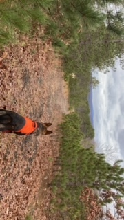
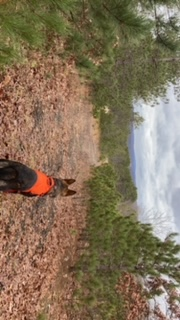

The Dogs
Metus
Metus, the esteemed alpha of our canine family, embodies unwavering composure and sound judgment. A stalwart guardian, he strategically oversees the pack, leading from both the forefront and a watchful distance. His innate ability to assess situations before taking action underscores his level-headed demeanor. While warmly welcoming to humans, Metus remains discerning, emitting a cautionary note when faced with unfamiliar faces. His multifaceted nature as a protector and a congenial companion leaves me with an immense sense of gratitude for such an exceptional dog.
 

Machali
Meet Machali, a distinguished member of the Samtastic Shepherds family. Renowned for her commanding presence, Machali is fully focused on any task at hand, making her an ideal candidate for roles such as a hunting dog or search and rescue. Her exceptional work ethic surpasses that of any other dog in my pack, exemplifying an unparalleled drive towards productivity. While Machali's dedication to her duties is unmatched, her lovable nature shines through. As an alpha female, she effortlessly assumes a leadership role within the pack, ensuring harmony and order. Unlike many alphas, Machali's position is secure, allowing her to maintain the pack dynamics with poise and grace. Machali's refined personality traits make her a standout representative of our breeding program, embodying the perfect balance of focus, work ethic, and affection. Her contributions leave an indelible mark on the legacy of Samtastic Shepherds